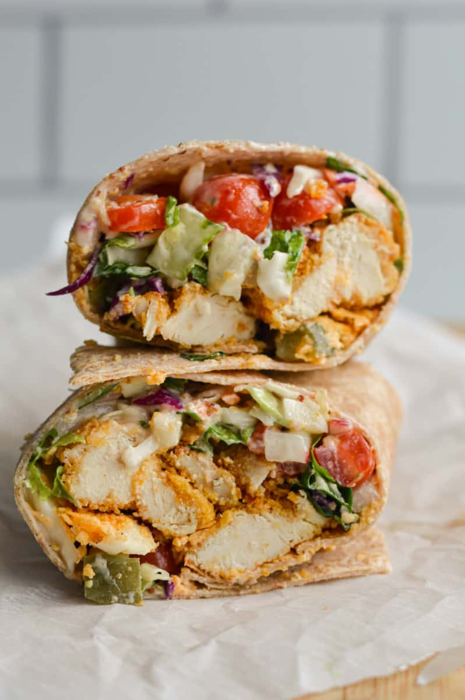

Honey Mustard Crispy Chicken Wrap

Description
A Honey Mustard Crispy Chicken Wrap is a satisfying meal featuring crispy chicken tenders, fresh vegetables, and a drizzle of tangy-sweet honey mustard sauce, all wrapped in a soft tortilla for a portable, flavorful bite.
Perfect as a lunch, snack or casual dinner
Ingredients
- For the Chicken:
- 2 chicken breasts, cut into strips
- 1 cup all-purpose flour
- 1 tsp garlic powder
- 1 tsp paprika
- 1/2 tsp salt
- 1/2 tsp black pepper
- 2 eggs, beaten
- 1 cup breadcrumbs (or panko for extra crunch)
- Vegetable oil for frying
- For the Wrap:
- 4 large flour tortillas
- 2 cups shredded lettuce
- 1 cup sliced tomatoes (or cherry tomatoes halved)
- 1 cup shredded cheese (cheddar or mozzarella)
- 1/2 cup sliced red onions (optional)
- For the Honey Mustard:
- 1/4 cup honey
- 1/4 cup Dijon mustard
- 2 tbsp mayonnaise (optional, for creaminess)
- 1 tbsp lemon juice (optional, for a tangy kick)
Steps
- In a bowl, mix the flour, garlic powder, paprika, salt, and pepper.
- Dip each chicken strip into the beaten eggs, then coat in breadcrumbs.
- Heat vegetable oil in a frying pan over medium heat. Fry the chicken strips until golden brown and cooked through, about 4~5 minutes per side. Remove and drain on paper towels.
- In a small bowl, whisk together honey, Dijon mustard, mayonnaise, and lemon juice until smooth. Adjust sweetness or tanginess to taste.
- Lay a tortilla flat and spread a generous drizzle of honey mustard sauce in the center.
- Layer with shredded lettuce, sliced tomatoes, cheese, and red onions.
- Place 2 or 3 crispy chicken strips on top.
- Fold the sides of the tortilla inward, then roll tightly to enclose the filling.